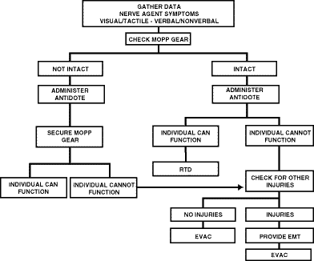

CHAPTER 5
ECHELONS I AND II HEALTH SERVICE SUPPORT
a. On future battlefields, NBC warfare will be considered a condition of the battle. Therefore, Echelons I and II HSS personnel must prepare to support in these environments. The importance of first aid (self-aid, buddy aid, and CLS support) becomes even more critical. Staffing of HSS units is based upon the minimum required to provide support on a conventional battlefield. Thus, they will be taxed in their ability to provide the level of HSS that is available on the conventional battlefield.
b. Nuclear, biological, and chemical actions cause high casualty rates, materiel losses, obstacles to maneuver, and contamination. Mission-oriented protective posture (Levels 3 and 4) results in body heat buildup, reduces mobility, and degrades visual, touch, and hearing senses; ultimately, degrading unit effectiveness.
c. Contamination is a major problem in providing HSS in an NBC environment. To maximize the unit's survival and support role, HSS leaders must take action to avoid NBC contamination. Maximum use must be made of:
- Contamination avoidance.
- Alarm and detection equipment and unit dispersion.
- Overhead shelters, shielding materials, and protective covers.
- Collective protection shelters.
- Chemical agent resistant coatings.
d. On the integrated battlefield, HSS is focused on keeping the soldier in the battle. Effective and efficient triage, emergency treatment, decontamination, and contamination control in the operational area saves lives, assures judicious evacuation, and maximizes the RTD rate.
a. To provide adequate HSS, definitive planning and coordination is required. This includes provisions for treatment, evacuation, and hospitalization (including care for enemy prisoners of war [EPW]). Field Manuals 8-9, 8-10-4, 8-10-6, and 8-285 contain additional information for use in planning for HSS operations in an NBC environment. Higher headquarters must distribute timely plans and directives to subordinate units. Provisions for emergency medical care of civilians, consistent with the military situation, must be included.
b. The medical planner makes an appraisal to determine the expected patient load. Using triage and emergency medical treatment (EMT) decision matrices for managing patients in a contaminated environment improves proficiency of treatment. See Figure 5-1 for a sample decision matrix. Training medical personnel in the use of simple decision matrices should enhance their effectiveness and contribute to more efficient battlefield treatment. Prior training for designated nonmedical personnel in patient decontamination procedures will enhance their effectiveness in the overall patient care mission.
Figure 5-1. Sample triage and EMT decision matrix.

5-3. Unit-Level Health Service Support
Unit-level HSS consists of combat medic, evacuation, and battalion aid station (BAS) operations. It is supported by first aid in the form of self-aid/buddy aid and the CLS. Commanders and HSS planners must make provisions for clearing the battlefield of casualties, including NBC casualties. Health service support personnel develop plans and are prepared in the event that NBC weapons or agents are employed.
5-4. Division-Level Health Service Support
a. In the brigade support area (BSA), HSS consists of evacuating patients from the BAS, providing area support medical treatment, operating the BSA division clearing station (DCS), including a patient holding capability for up to 40 patients for 72 hours, and providing limited dental service. The area support treatment team provides sick call and medical treatment for personnel in the BSA (on an area basis). The DCS continues care for patients received from the BAS; some are held up to 72 hours and then RTD; others require further stabilization before evacuation to a corps hospital. Patient holding provides a place where patients can recover from minor illnesses or injuries and RTD within a few hours. Limited laboratory, pharmacy, and radiology services are available. In an NBC environment, many patients may be suffering from claustrophobia or stress from being in confined areas, or in their MOPP. Many patients may RTD after a few hours of rest and refreshments. The DCS locates in a clean area, or establishes CPS to continue their HSS mission, including providing an area for patients to remove their MOPP for a few hours, then RTD. Preventive medicine (PVNTMED) and mental health personnel may be attached to the BSA medical company from the division support area (DSA) medical company to provide limited services within their specialties.
b. In the DSA, HSS consists of limited patient evacuation from the forward MTFs; provides patient evacuation on an area basis; provides area support medical treatment; operates the DSA DCS (including a patient-holding capability for up to 40 patients for 72 hours); provides limited laboratory, pharmacy, radiology, and dental services, PVNTMED support, limited optometry service, and mental health support. The PVNTMED team provides limited support in the areas of disease vector surveillance, water quality control (including NBC contamination surveillance), and communicable diseases control. The mental health personnel provides counseling and comfort for combat stress patients; these patients are returned to duty as far forward as their condition permits.
5-5. Actions Before a Nuclear, Biological, or Chemical Attack
The first and foremost action for medical personnel to take before an NBC attack is training to survive the attack; operate the MTF in the environment; and effectively care for NBC casualties. Medical personnel must keep their immunizations current; use available prophylaxis against suspect agents; use pretreatments for suspect agents; and have antidotes and essential medical supplies readily available for known or suspected chemical or biological agents. The best defense for medical personnel is to protect themselves, their patients, medical supplies, and equipment by applying contamination avoidance procedures. They must ensure that stored medical supplies and equipment are in protected areas, or in their storage containers with covers in place. One method of having supplies and equipment protected is to keep them in their shipping containers until actually needed. When time permits and warnings are received that an NBC attack is imminent, or that a downwind hazard exists, medical personnel should seek protected areas such as CPS, basements of buildings, culverts, and ravines for themselves and their patients.
5-6. Actions During a Nuclear, Biological, or Chemical Attack
Medical personnel and their patients will remain in the best available protected areas during the attack. During a nuclear attack, they take up positions within the shelter that are away from windows and other openings; they only move out of these positions when notified that it is safe to do so. In the absence of higher authority, medical personnel use caution in their movements.
5-7. Actions After a Nuclear, Biological, or Chemical Attack
Medical personnel must survey their equipment to determine the extent of damage and their capabilities to continue the mission. Initially, patients from nuclear detonations will be suffering thermal burns or blast injuries. Also, expect disorientation from patients and medical personnel. Normally, radiation-induced injuries will be observed after a few hours to days. Chemical agent patients will manifest their injuries immediately upon exposure to the agent, except for blister agents. Biological agent patients may not show any signs of illness for hours to days after exposure. All patients receiving treatment must be checked for NBC contamination. Patients are decontaminated before treatment to reduce the hazard to medical personnel, unless life- or limb-threatening conditions exist. Patients requiring treatment before decontamination are treated in the EMT area of the decontamination station. Examples of patient conditions that may require treatment at the contaminated treatment station of the decontamination area are:
- Cardiac arrest.
- Massive hemorrhage.
- Respiratory distress.
5-8. Logistical Considerations
a. The HSS system is organized and equipped to provide support in a conventional environment. However, it must train and prepare to operate in all battlefield situations. Operating in an NBC environment requires the issue of chemical patient treatment sets, chemical patient decontamination sets, and CPS systems when not used as the primary shelter in conventional operations. For operational procedures and use of the CPS as an MTF and management of patients, see Appendix D and the appropriate technical manual for the specific CPS system.
b. The division medical supply office (DMSO) maintains a 5 to 15-day stockage level of Class VIII supplies; the exact number of days of supplies maintained are prescribed in the TSOP. Medical supplies and equipment are protected from contamination by chemical agent resistant coatings or protective coverings. Class VIII stocks are dispersed to prevent or reduce damage and NBC contamination. Health service support plans include protecting (NBC hardening) contingency stocks and rapid resupply of affected units by using prepackaged and preconfigured push resupply. Other resupply procedures may be established by the command in the TSOP. Decontaminate items before issue to using units.
c. The divisional and nondivisional medical company PVNTMED section and supporting corps PVNTMED personnel are responsible for testing the quality of water for the division. Water from local sources (lakes, ponds, wells, or public water systems) may be contaminated; therefore, test all sources for contaminants before use; frequently retest the water. Mark contaminated water sources with NBC contamination markers; do not use the water until it is safe, or water treatment equipment capable of removing the contaminants is employed. Dispose of contaminated water in a manner that prevents secondary contamination; mark the area. Frequently monitor all water dispensing and associated equipment for possible contamination. Water supply on the NBC battlefield is provided on an area basis by the supply and transportation battalion. However, maneuver elements receive their water supply through unit distribution.
During NBC actions, medical treatment requirements will increase; thus, medical reinforcement/replacement may be necessary. Plans for HSS following an NBC attack must include efforts to conserve available HSS personnel and ensure their best use. Medical personnel will be fully active in providing EMT or advanced trauma management (ATM); they will provide more definitive treatment as time and resources permit. However, to provide definitive care they must be able to work in a shirt sleeved environment, not in MOPP Levels 3 or 4. Nonmedical personnel conduct search and rescue operations for the injured or wounded; they provide immediate first aid and decontamination. Also, nonmedical personnel are required to man the patient decontamination station at the BAS and DCS (FMs 3-5, 8-10-4, and 8-285).
5-10. Disposition of Treatment Elements
Select sites for the BAS and DCS that are located away from likely target areas. Covered and concealed sites are extremely important; they increase protection for operating the MTF.
a. Operating CPS systems at the BAS requires more than four medical personnel. This is why the squad does not operate as split teams during NBC operations. A method of obtaining additional HSS in the area of operations (AO) is to request additional medical teams from the supporting medical company.
b. The BAS is equipped with two medical equipment sets (MES) for chemical agent patient treatment and one MES for chemical agent patient decontamination. These sets have enough consumable supplies for decontamination and treatment of 60 chemical agent patients. These sets are also used at DCS, corps hospitals, and COMMZ hospitals to decontaminate and treat chemical agent patients. The number of sets varies, depending on the treatment site.
NOTE:
The chlorine granules in the chemical agent patient decontamination set are used to prepare the chlorine solution to decontaminate patients.
Civilian casualties may become a problem in populated or built-up areas; they may not have protective equipment and training. The BAS and DCS may be required to provide assistance when civilian medical resources cannot handle the work load. However, aid to civilians will not be undertaken at the expense of health services for US personnel. Keep in mind that once care for civilians has begun, you are required to continue this care until relieved.
a. The medical platoon must continue its support mission in a nuclear environment. To continue their support role, they must prepare protective shelters. Well-constructed foxholes with overhead cover and expedient shelters (reinforced concrete structures, basements, railroad tunnels, or trenches) provide good protection from nuclear attacks (see Appendix B). Armored vehicles also provide protection against both the blast and radiation effects of nuclear weapons. Casualties generated in a nuclear attack will likely suffer multiple injuries (combination of blast, thermal, and radiation injuries) which will complicate HSS. Nuclear radiation casualties fall into three categories:
- The irradiated casualty is one who has been exposed to ionizing radiation, but is not contaminated. They are not radioactive and pose no radiation threat to medical care providers. Casualties who have suffered exposure to initial nuclear radiation will fit into this category.
- The externally contaminated casualty has radioactive dust and debris on his clothing, skin, or hair. He presents a "housekeeping" problem to the MTF, similar to the lice-infested patient arriving at a peacetime MTF. However, this contamination may present a threat to medical personnel. The externally contaminated casualty is decontaminated at the earliest time consistent with required medical care. Lifesaving care is always rendered, when necessary, before decontamination.
- The internally contaminated casualty is one that has ingested or inhaled radioactive materials, or radioactive material has entered the body through an open wound. The radioactive material continues to irradiate the casualty internally until radioactive decay and biological elimination removes the radioactive isotope. Attending medical personnel are shielded, to some degree, by the patient's body. Inhalation, ingestion, or injection of quantities of radioactive material sufficient to present a threat to medical care providers is highly unlikely.
b. Medical units operating in a radiation fallout environment will face three problems:
- Immersion of the treatment facility in fallout, requiring decontamination efforts.
- Casualty production due to gamma radiation.
- Hindrance to evacuation caused by the contaminated environment.
Medical triage, as discussed earlier, is the classification of patients according to the type and seriousness of injury. This achieves the most orderly, timely, and efficient use of medical resources. However, the triage process of nuclear patients is different than conventional injuries. See paragraph 4-2 for the triage classifications and Table 4-2 for the effects of radiation on triage.
a. A biological attack (such as the enemy use of bomblets, rockets, spray or aerosol dispersal, release of arthropod vectors, and terrorist or insurgent contamination of food and water) may be difficult to recognize because frequently it does not have an immediate affect on exposed personnel. Medical personnel must monitor for biological warfare indicators such as:
- Increases in disease incidence or fatality rates.
- Sudden presentation of an exotic disease.
- Other sequential epidemiological events, especially when presented in lines of communication.
b. Passive defensive measures (such as immunizations, good personal hygiene, physical conditioning, using arthropod repellents, wearing protective mask, and practicing good sanitation) will mitigate the effects of most biological intrusions.
c. The medical commander must enforce contamination control to prevent injury to medical personnel and to preserve his facility. Incoming vehicles and patients must be surveyed for contamination. Ventilation systems in medical treatment facilities (without CPS) must be turned off if biological or chemical exposure is imminent.
d. Decontamination of most biologically contaminated patients and equipment can be accomplished with soap and water. See Appendix C for specific patient decontamination procedures.
e. Treatment of biological-agent patients may require observing and evaluating the individual to determine necessary medications, isolation, or treatment.
a. Handling chemically contaminated patients presents a great challenge to HSS units. All casualties generated in a chemical environment are presumed to be contaminated. Due to the vapor hazard associated with contaminated patients, medical personnel may have to remain at MOPP Level 4 for long periods of time. Therefore, they must locate clean areas in which to set up their MTF. When clean areas are not available, the CPS systems are established. However, the MTF only operates in a contaminated environment until they have the time and the means to move to a clean area.
b. A patient decontamination station is established to handle contaminated patients; see Appendix C. The station is separated from the clean treatment area by a „hotline¾ and is located downwind of the clean treatment area. Personnel on both sides of the „hotline¾ assume a MOPP level commensurate with the threat agent employed (normally MOPP Level 4). The patient decontamination station should be established in a contamination-free area of the battlefield. When CPS systems are not available, the clean treatment area is located upwind 30 to 50 meters of the contaminated work area. When personnel in the clean working area are away from the hotline, they may reduce their MOPP level. Chemical monitoring equipment must be used on the clean side of the hotline to detect vapor hazards due to slight shifts in wind currents; if vapors invade the clean work area, medical personnel must remask to prevent low-level chemical agent exposure and minimize clinical effects (such as miosis).
c. Initial triage, EMT, and decontamination are accomplished on the „dirty¾ side of the hotline. Life-sustaining care is rendered, as required, without regard to contamination. Normally, the senior EMT noncommissioned officer (NCO) performs initial triage and EMT at the BAS. Secondary triage, ATM, and patient disposition are accomplished on the clean side of the hotline. When treatment must be provided in a contaminated environment outside the CPS, the level of care may be greatly reduced because treaters and patients are in MOPP Level 3 or
4. However, lifesaving procedures must be accomplished.
d. The BAS and DCS will require 8 nonmedical augmentation personnel to perform patient decontamination. This augmentation must come from the supported units. See Appendix C for operating a patient decontamination station.
5-16. Operations in Extreme Environments
Enemy employment of NBC weapons in the extremes of climate or terrain warrants additional consideration. Included are the peculiarities of urban terrain, mountain, snow and extreme cold, jungle, and desert operations in an NBC environment with the resultant NBC-related effects upon medical treatment and evacuation. For a more detailed discussion on NBC aspects of urban terrain, mountain, snow and extreme cold, jungle, and desert operations, see FM 31-71, FM 90-3, FM 90-5, FM 90-6, FM 90-10, and FM 90-10-1.
a. In mountain operations, units may be widely dispersed. Close terrain may limit concentrations of troops and fewer targets may exist; therefore, a lower patient load may be anticipated. Logistical problems, including medical evacuation, will increase. Health service support resources are spread over a wider area. Mountain passes and gorges may tend to canalize nuclear blast and the movement of chemical and biological agents. Ridges and steep slopes may offer some shielding from thermal radiation effects. Roads and railways may be nonexistent or of limited use, thus restricting movement and complicating patient evacuation. There will be a greater reliance on air ambulance support; however, the weather may hinder flights to some areas.
b. The effects of extreme cold weather combined with NBC-produced injuries have not been extensively studied. However, with traumatic injuries, cold hastens the progress of shock, providing a less favorable prognosis. Thermal effects will tend to be reinforced by reflection of thermal radiation from snow and ice-covered areas. Care must be exercised when moving chemically contaminated patients into a warm shelter. A chemical agent on the patient's clothing may not be apparent. As the clothing warms to room temperature, the chemical agent will vaporize (off-gas); thus, contaminating the shelter.
c. In rain forests and other jungle environments, the overhead canopy will to some extent shield personnel from thermal radiation. It may ignite, however, creating the danger of forest fires and resulting in burn injuries. By reducing sunlight, the canopy may increase the persistency effect of chemical agents near ground level. The canopy also provides a favorable environment for biological agents.
d. In desert operations, troops may be widely dispersed, thus, presenting less profitable targets. However, the lack of cover and concealment exposes troops to increased hazards. Smooth sand is a good reflector of both thermal and blast effects; therefore, these effects will generate an increase in injuries. High desert temperatures will increase the discomfort and debilitation of soldiers wearing MOPP; especially heat injuries.
5-17. Medical Evacuation in a Nuclear, Biological, and Chemical Environment
a. An NBC environment forces the unit commander to consider to what extent he will commit evacuation assets to the contaminated area. If the battalion or task force is operating in a contaminated area, most or all of the medical platoon evacuation assets will operate there. However, efforts should be made to keep some ambulances free of contamination.
b. We have three basic modes of evacuating casualties (personnel, ground vehicles, and aircraft). Using personnel to physically carry the casualties involves a great deal of inherent stress. Cumbersome MOPP gear, added to climate, increased work loads, and the fatigue of battle, will greatly reduce personnel effectiveness. If evacuation personnel are to be sent into a radiologically contaminated area, an OEG must be established; see Table 3-1. Radiation exposure records must be maintained by the NBC NCO and made available to the commander, staff, and medical platoon leader. Based on the OEG, the commander or medical platoon leader will decide which evacuation elements to send into the contaminated area. Again, every effort is made to limit the number of evacuation assets which are contaminated. Evacuation considerations should include the following:
(1) A number of ambulances will become contaminated in the course of battle. Optimize the use of resources; use those already contaminated (medical or nonmedical) before employing uncontaminated resources.
(2) Once a vehicle or aircraft has entered a contaminated area, it is highly unlikely that it can be spared long enough to undergo a complete decontamination. This will depend upon the contaminant, the tempo of the battle, and the resources available to the evacuation unit. Normally, contaminated vehicles (air and ground) will be confined to dirty environments.
(3) Use ground ambulances instead of air ambulances in contaminated areas; they are more plentiful, are easier to decontaminate, and are easier to replace. However, this does not preclude the use of aircraft.
(4) The relative positions of the contaminated area, forward line of own troops (FLOT), and threat air defense systems will determine where helicopters may be used in the evacuation process. One or more helicopters may be restricted to contaminated areas; use ground vehicles to cross the line separating clean and contaminated areas. The ground ambulance proceeds to an MTF with a patient decontamination station; the patient is decontaminated and treated. If further evacuation is required, a clean ground or air ambulance is used. The routes used by ground vehicles to cross between contaminated and clean areas are considered dirty routes and should not be crossed by clean vehicles. Consider the effects of wind and time upon the contaminants; some agents will remain for extended periods of time.
(5) Always keep the rotorwash of the helicopters in mind when evacuating patients, especially in a contaminated environment. The intense winds will disturb the contaminants and further aggravate the condition. The aircraft must be allowed to land and reduce to flat pitch before patients are brought near. This will reduce the effects of the rotorwash. Additionally, a helicopter must not land too close to a decontamination station (especially upwind) because any trace of contaminants in the rotorwash will compromise the decontamination procedure.
c. Hasty decontamination of aircraft and ground vehicles is accomplished to minimize crew exposure. Units include deliberate decontamination procedures in their standing operating procedures (SOP). A sample aircraft decontamination station that may be tailored to a unit's needs is provided in FM 1-102 and FM 3-5.
d. Evacuation of patients must continue, even in an NBC environment. The medical leader must recognize the constraints NBC places on operations; then plan and train to overcome these deficiencies.
NOTE:
The key to mission success is detailed preplanning. A health service support plan (HSSPLAN) must be prepared for each support mission. Ensure that the HSSPLAN is in concert with the tactical plan. Use the plan as a starting point and improve on it while providing HSS.
¦ About This Manual ¦ Preface ¦ Authorities ¦ Table of Contents ¦ Chapter 1 ¦ Chapter 2 ¦ Chapter 3 ¦ Chapter 4 ¦
¦ Chapter 6 ¦ Chapter 7 ¦ Appendix A ¦ Appendix B ¦ Appendix C ¦ Appendix D ¦ Appendix E ¦
¦ Appendix F ¦ Appendix G ¦ References ¦ Glossary ¦ Index ¦ Home ¦